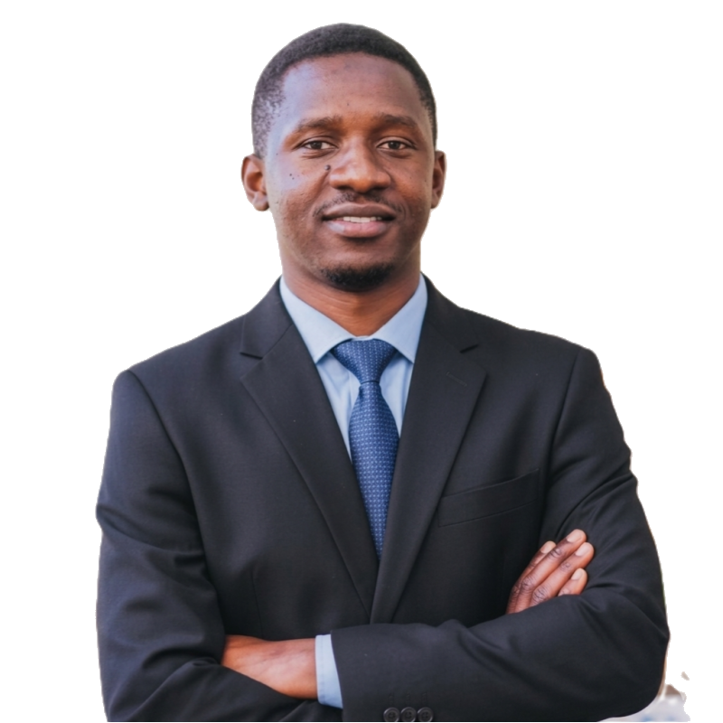

🔷
blazorProject
Une application web interactive construite avec Blazor : du C# côté navigateur plutôt que du JavaScript. Mon terrain d'apprentissage de l'écosystème .NET moderne.
Voir le code →
Je suis Mohamed, développeur passionné par la tech et tout ce qui se construit avec du code. Ce site est mon espace : j'y partage mon travail, mes projets, mais aussi mon quotidien et ce que j'apprends en chemin.
Ce qui me motive : transformer des idées en produits concrets, apprendre en continu, et documenter le parcours — les réussites comme les galères.
Une sélection de projets dont je suis fier. Chaque projet raconte une histoire.
Une application web interactive construite avec Blazor : du C# côté navigateur plutôt que du JavaScript. Mon terrain d'apprentissage de l'écosystème .NET moderne.
Voir le code →Structures de données en Java, projet Spring, expérimentations Python… le reste de mon travail est sur mon profil GitHub.
Voir mon profil →Développeur .NET à Casablanca — quatre ans d'expérience sur des applications métiers.
Ce que je construis, apprends et vis — au jour le jour.
Un projet, une idée, ou juste envie d'échanger ? Ma boîte mail est ouverte.
mohamedoum2430@gmail.com